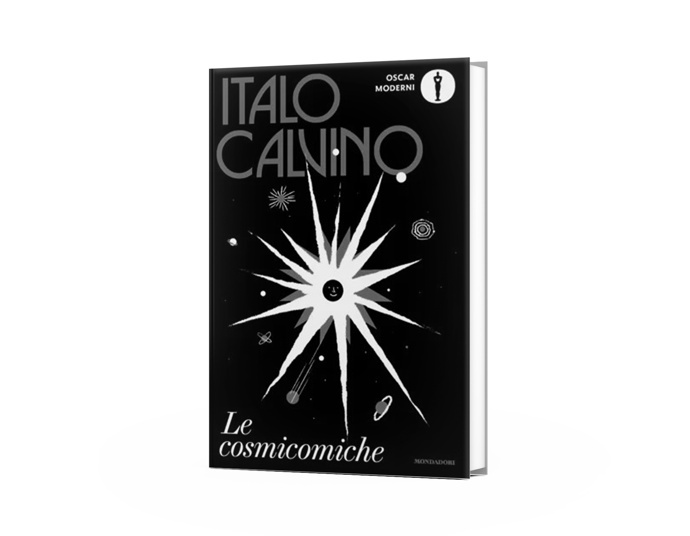

In occasione del centenario della nascita di Italo Calvino (2025), Mondadori ha ripubblicato tutte le sue opere in una nuova edizione Nuove copertine grafiche unificate, pensate appositamente per i libri di Calvino.
100 anni di Italo Calvino

Il designer
Jack Smyth, grafico irlandese, è stato scelto per la sua esperienza e passione per Calvino. Crea copertine eleganti, narrative e adatte a un pubblico giovane. Ogni copertina doveva riflettere l’essenza profonda e giocosa delle opere di Calvino, senza riassumere la trama.
Le sfide
Ogni copertina ha due colori predominanti, più bianco e nero, per garantire visibilità e coerenza visiva tra i 33 libri. Le copertine definitive sono state frutto di un ragionamento collettivo, e sono state sottoposte all'amministratore delegato di Mondadori Libri, Enrico Selva Coddè, e a Giovanna Calvino, figlia dello scrittore, che ha approvato ogni copertura prima della stampa.